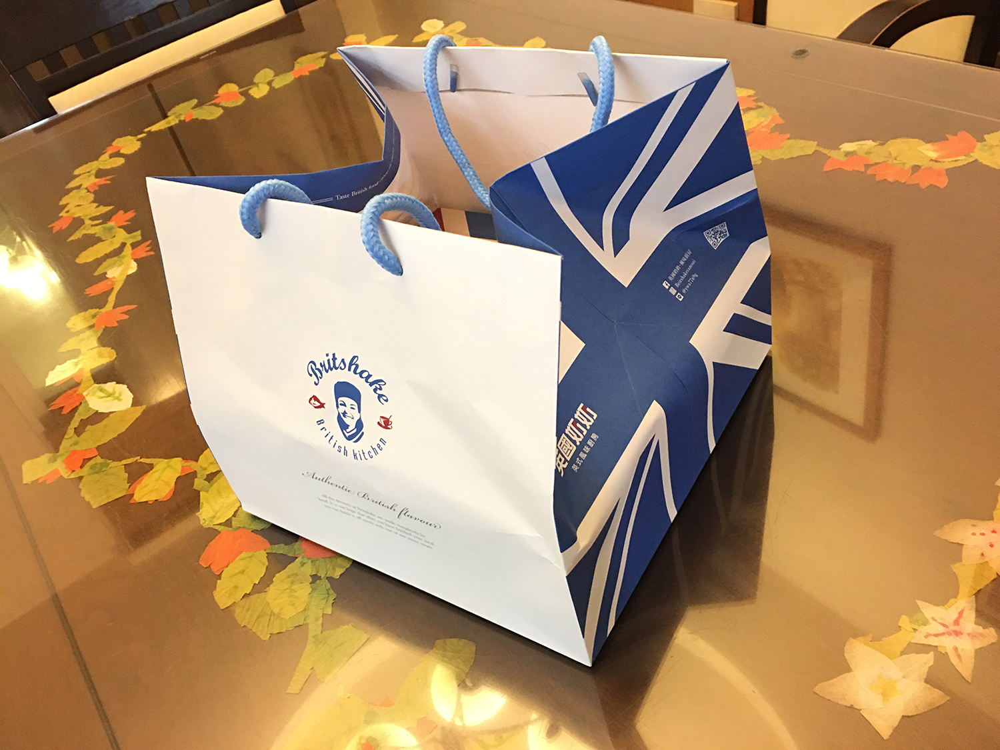
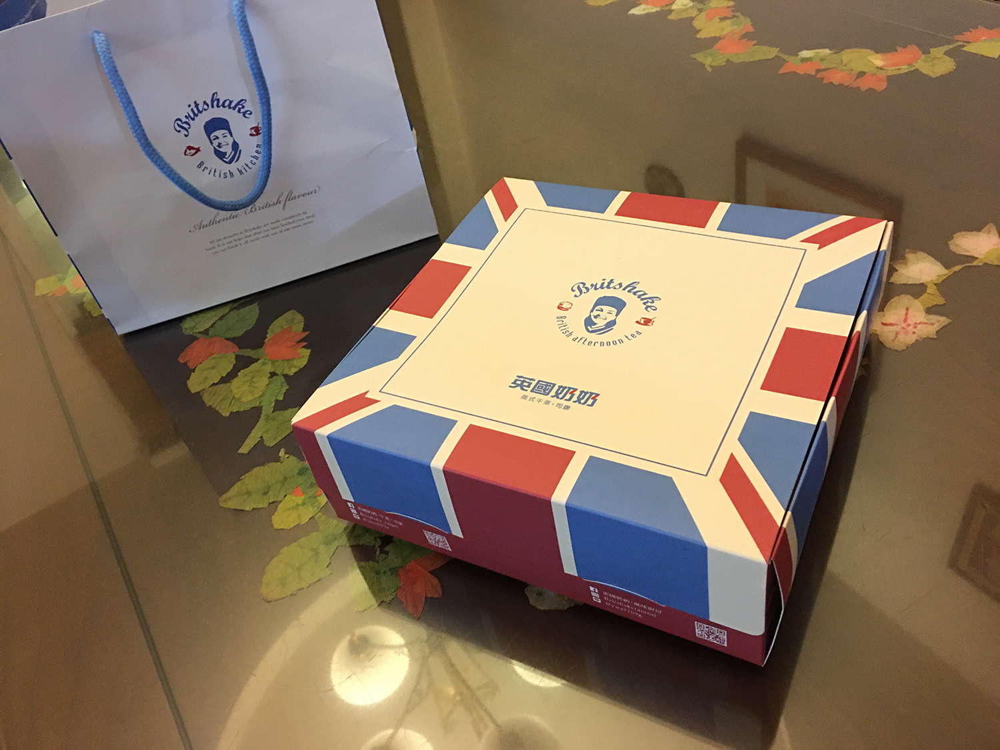
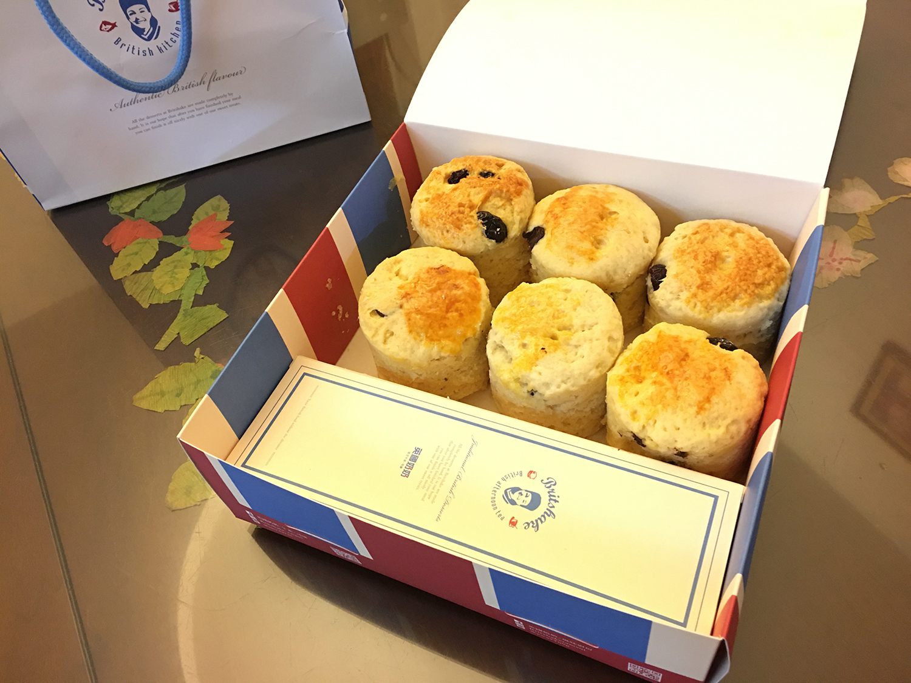
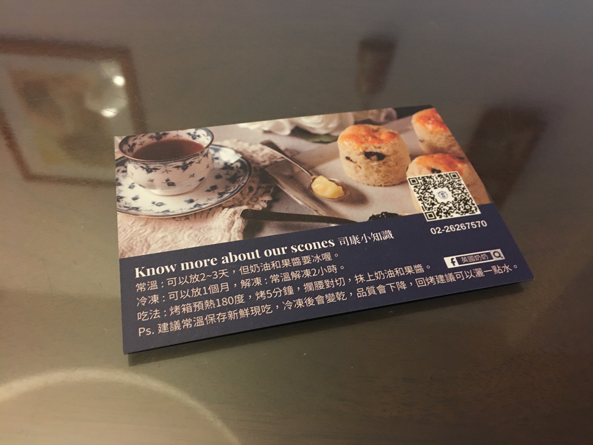
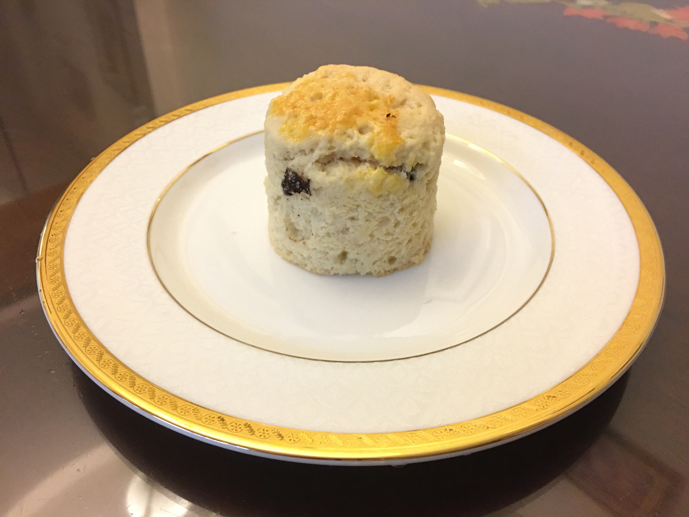
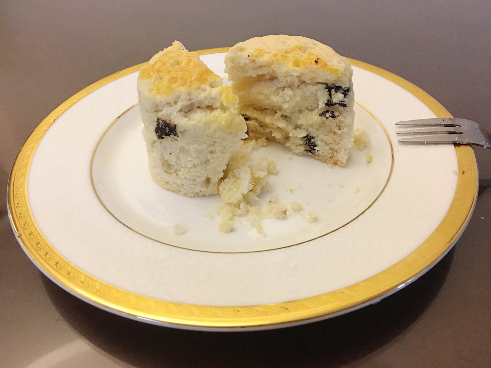
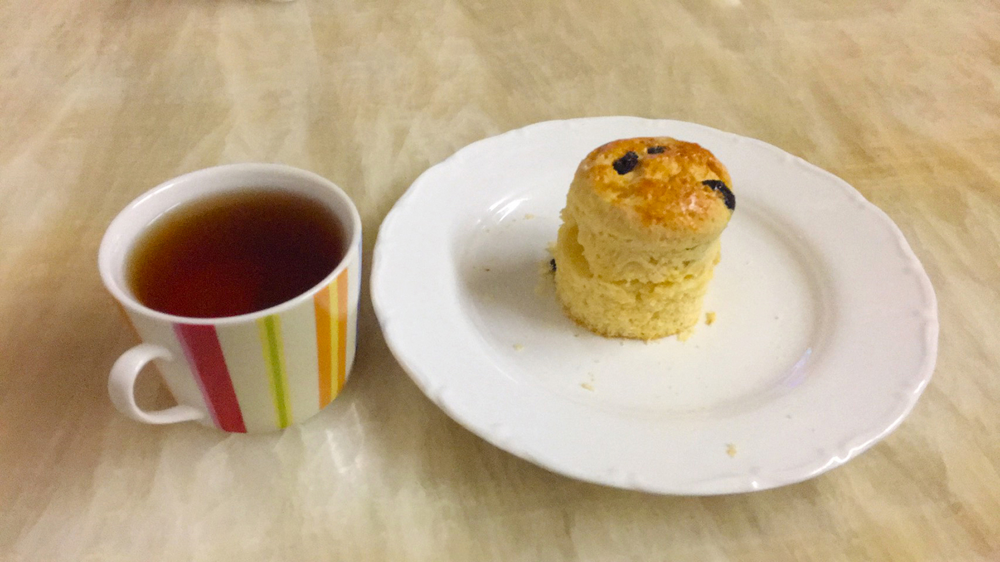

英國奶奶
英國奶奶司康，在咱家愛好美食的親友間封有「司康界的ＬＶ」的稱號，究竟是多高級？......雖然一開頭就丟出一句好像非常期盼的問句，但其實自己早就已經吃過好幾次了（喂！
這次因為有家人難得來台北一次，路線剛好也會經過英國奶奶的店，也就順道帶一盒回去解解饞～


覺得外盒設計蠻好看的，也來拍一下。

這次買了巧克力跟蔓越莓兩種口味各三個。但這次買回來沒有立即吃，是先放冷藏，隔天要吃之前再烤過一次

名片有附上司康的保存跟吃法說明，如果跟本K一樣買回來時無法立即現吃，可以帶張名片回去。
隔天要吃時發現巧克力跟蔓越莓這兩種口味在外觀上其實蠻像的，要挑口味吃的時候都分不清楚哪個是哪個。

這是...巧克力口味......對吧？

剛烤完熱熱的吃，吃起來外酥內軟，司康的質地真的不錯，只是再切的時候容易鬆散，這點就要小心一下不要掉到桌上。雖然容易掉屑屑，但口感不錯所以沒問題的！
另外發生一件有趣的小插曲，當初買的是蔓越莓跟巧克力口味，但是吃的時候發現......以為是蔓越莓口味的應該是葡萄乾吧！？大概是店員錯把葡萄乾說成蔓越莓了，也沒關係，就將錯就錯，來吃吃看葡萄乾口味的司康吧。

再放一次當時的巧克力司康
長得一樣吧！！！！！
後來收到有第一次接觸司康的家人反應司康吃起來乾乾的，其實就像名片上寫得最好還是當天現吃啦！冰過後會變乾，最好的辦法就是配著紅茶(英國點心就是要搭紅茶～)一起吃！
再次附上我們哈哈的標準吃法XD
那這次的分享就到這邊～
Thanks for watching :)